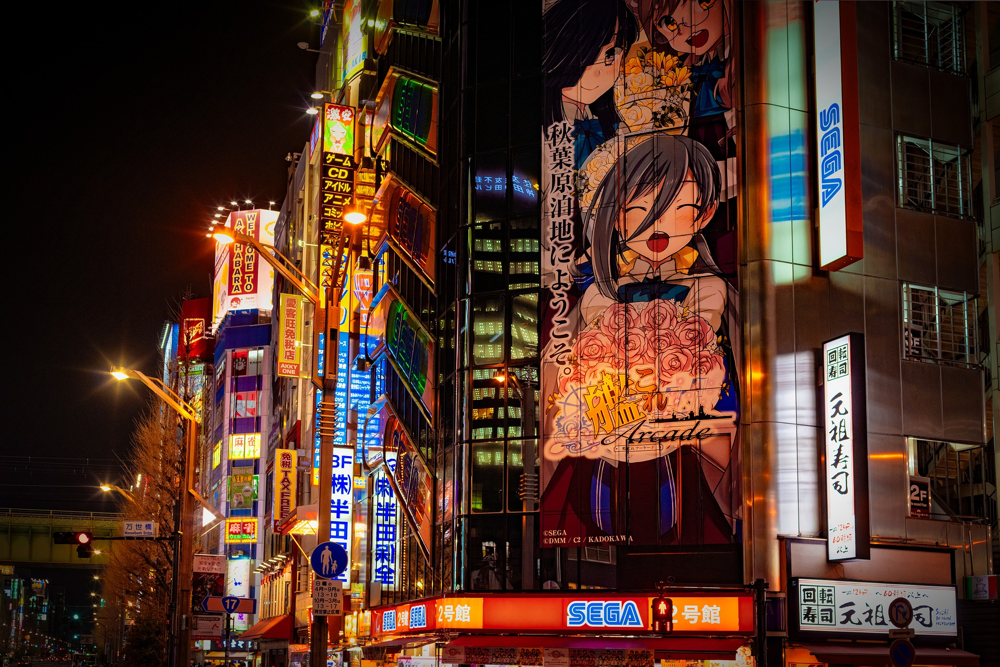
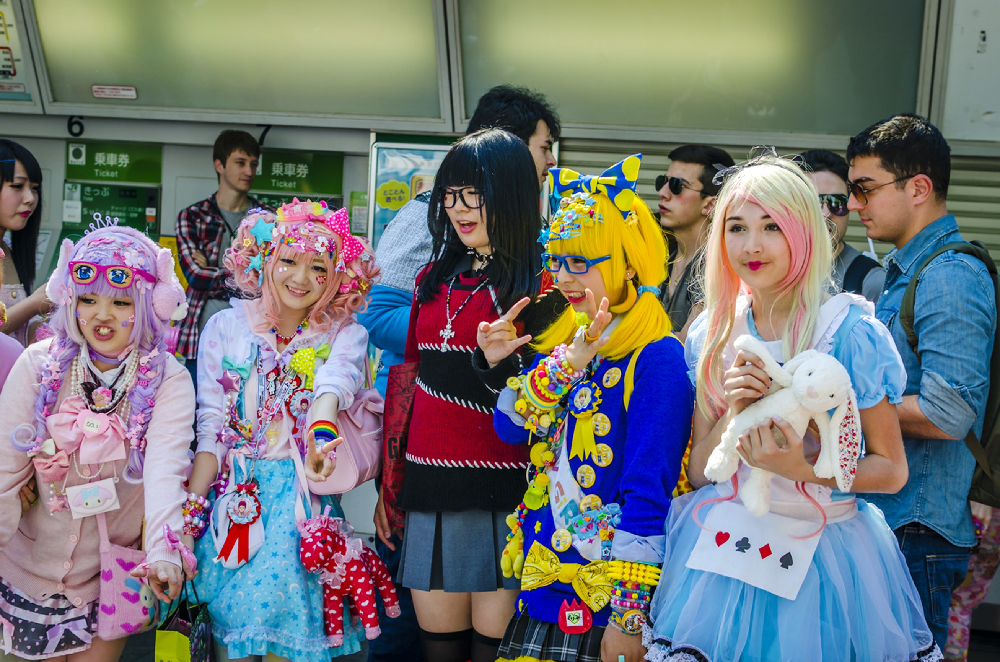
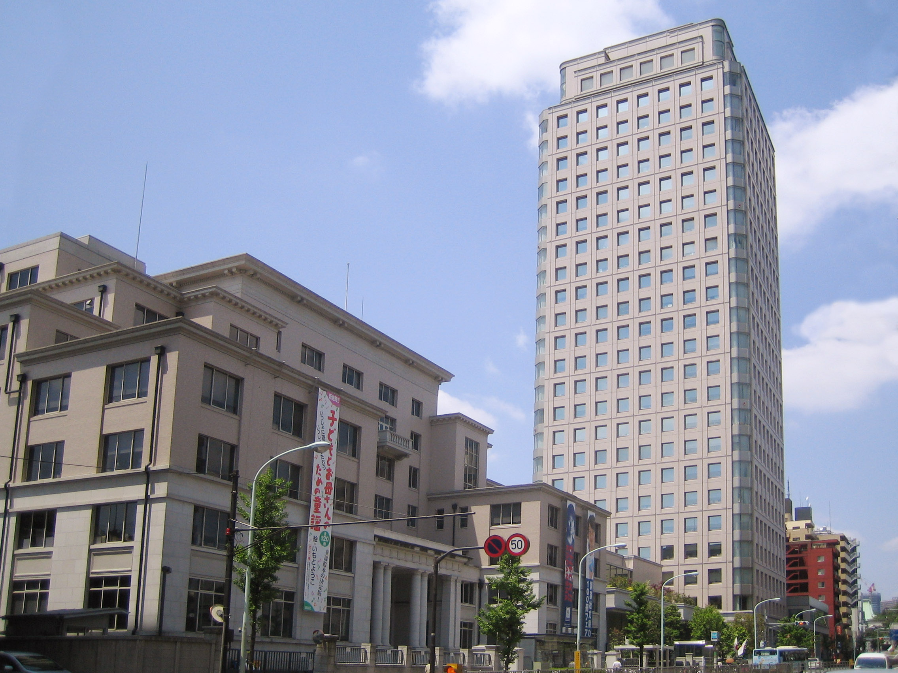

Tokyo
Visiter Tokyo reviendrait pour moi à réaliser mon rêve de fan d'animes et de mangas.
Quelques sites à Tokyo
-
Le plus grand quartier d'Otaku au monde, Akihabara

-
Harajuku, centre de la mode au Japon

-
Kōdansha Ltd

Akihabara (秋葉原) est un quartier célèbre du quartier de Chiyoda situé dans Tokyo. Akihabara est une véritable maison pour otaku! Le nom Akihabara est une abréviation pour Akibagahara (秋葉が原) qui signifie "Champ de feuilles d'automne". Ce quartier reçoit également un surnom abrégé affectueux: Akiba.s
c'est un quartier populaire parmi les fans de mode. Beaucoup confondent en pensant qu'ils font du cosplay. Ils portent en fait la mode de la rue japonaise - pas des costumes. La région est également assez populaire auprès des cosplayers.
Kōdansha est la plus grosse maison d'édition de l'archipel japonais, œuvrant notamment en matière de littérature et de manga. Son siège social est situé à Bunkyō, à Tokyo.